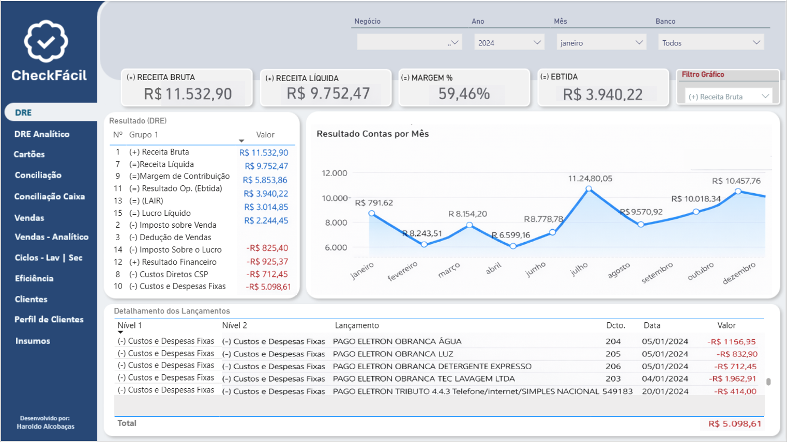
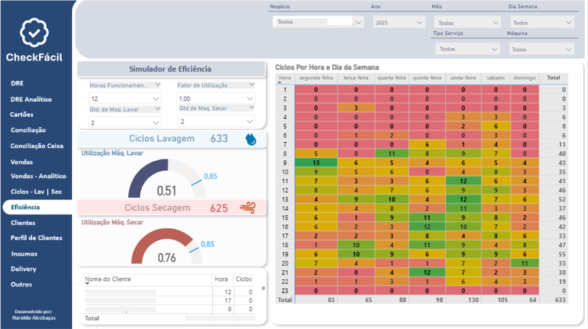
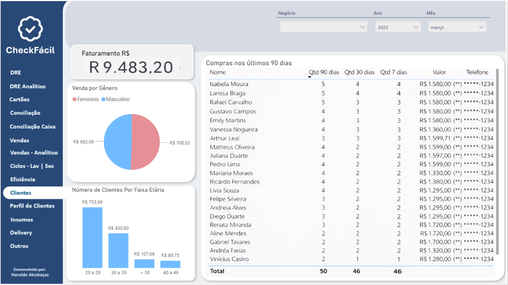

Dashboard Financeiro e Operacional para uma Rede de Lavanderias
De dados dispersos a insights acionáveis: um produto orientado à decisão e ao impacto no negócio.
O Desafio: Navegar sem Bússola em um Oceano de Dados
Aplicação do Case:
O presente case foi aplicado em uma rede de lavanderias composta por duas unidades no estado de Minas Gerais.
Contexto:
A empresa enfrentava um cenário de grande volume de dados, mas com escassez de informações úteis. As decisões estratégicas eram, em grande parte, orientadas pela intuição. Embora já existisse um dashboard em uso, ele se limitava a visualizações básicas, sem análises aprofundadas ou métricas que apoiassem decisões estratégicas e operacionais. Portanto como resultado, o negócio necessitava de uma solução que proporcionasse uma visão integrada de desempenho, eficiência operacional, custos e vendas.
Principais Problemas:
Análise Superficial
Relatórios isolados não revelavam a performance real, análise de cenários e rentabilidade de contratos.
Ociosidade Operacional
Falta de visibilidade e controle sobre a eficiência operacional e taxa de utilização das máquinas.
Desconhecimento do Perfil de Consumo dos Clientes
Ausência de visibilidade sobre o perfil dos clientes, padrões de consumo, eficácia das promoções.
Riscos Financeiros
Dificuldade em prever fluxo de caixa e despesas, ausência de visão clara do custo real por lavagem e ponto de equilíbrio financeiro do negócio.
Dados Fragmentados
Informações espalhadas em planilhas e sistemas que não se conversavam.
Lentidão na Resposta
A demora para processar dados impedia reações rápidas a crises de demanda.
O Mapa: Da Intuição à Clareza, Estruturando as Perguntas Certas
Se o problema era navegar sem bússola, o Discovery foi o momento de desenhar o mapa. A etapa teve como foco estruturar o problema antes da solução, utilizando problem framing para transformar dúvidas do negócio em perguntas claras e mensuráveis.
A abordagem combinou Product Discovery, definição de métricas orientadas à decisão, priorização por impacto e validação contínua com stakeholders, garantindo foco em valor e apoio direto à tomada de decisão.
Principais atividades realizadas:
Mapeamento do Cenário
Imersão no modelo operacional, financeiro e comercial da lavanderia para entender restrições, alavancas de valor e fluxos críticos do negócio.
Problem Framing & Hipóteses
Estruturação das principais dores do negócio em problemas claros, traduzidos em hipóteses mensuráveis para orientar o desenvolvimento do produto.
Definição da estratégia
Mapeamento das decisões recorrentes da proprietária (preço, promoções, expansão, uso de máquinas) para garantir que o dashboard suportasse ação, não apenas visualização..
Definição de Métricas
Conversão das dúvidas do negócio em KPIs acionáveis, como ponto de equilíbrio, custo por lavagem, taxa de utilização e impacto de promoções.
Priorização por Impacto
Priorização dos indicadores com base em impacto no resultado financeiro, simplicidade de entendimento e frequência de uso na tomada de decisão..
Validação Contínua
Validação iterativa das métricas e visualizações junto à stakeholder principal, garantindo alinhamento com expectativas e uso prático do produto.
O Caminho: Um Dashboard para Iluminar a Jornada
A solução foi concebida como um produto de dados modular , estruturado em camadas de análise financeira, operacional e de comportamento do cliente , posteriormente batizado de Check Fácil. O foco não foi apenas visualizar informações, mas conectar métricas a decisões práticas do dia a dia do negócio, apoiando ações estratégicas e operacionais de forma consistente.
A seguir apresento algumas telas da Solução criada, com dados fictícios exemplificar:

Visão Financeira Detalhada: As telas de DRE Gerencial e DRE Analítico oferecem uma visão completa e aprofundada da performance financeira da operação. No DRE Analítico, o cálculo do ponto de equilíbrio operacional e financeiro permite avaliar a sustentabilidade do negócio, antecipar cenários e aumentar a previsibilidade financeira. Essas análises apoiam decisões mais assertivas sobre custos, preços, volume de lavagens e crescimento da operação.
*Obs.: Para preservar a confidencialidade da empresa, os dados apresentados são fictícios.

Otimização Operacional: Com as telas de gerenciamento de eficiência, utilização de máquinas, e análise toramento de ciclos de lavagem, secagem, Identificamos picos de demandas e comportamentos de consumo, auxiliando no balanceamento de carga e estratégias para novos contratos, além de permitir a simulação de equipamentos necessários para atender a demanda projetada.
*Obs.: Para preservar a confidencialidade da empresa, os dados apresentados são fictícios.

Entendimento do Cliente: A partir das telas de Clientes, Perfil de Clientes e Vendas-Analítico, combinadas com análises de cohort por dia e horário, ticket médio e indicadores de fidelidade, foi possível identificar padrões de consumo e comportamento. Essas informações permitem compreender o perfil dos clientes (faixa etária, frequência de uso e preferências) e direcionar campanhas de marketing mais assertivas e personalizadas.
*Obs.: Para preservar a confidencialidade da empresa, os dados apresentados são fictícios.
O Impacto: Transformando Dados em Crescimento
Mesmo sem métricas quantitativas consolidadas neste momento, os resultados do projeto se manifestaram de forma qualitativa, principalmente na evolução da tomada de decisão, na organização das informações e no suporte às estratégias do negócio.
Principais resultados:
Clareza na Tomada de Decisão
A consolidação das informações em um único produto de dados reduziu a dependência de decisões intuitivas, permitindo escolhas mais conscientes e alinhadas aos objetivos do negócio.
Visão Integrada do Negócio
A análise combinada de dados financeiros, operacionais e de clientes proporcionou uma visão holística da operação, antes fragmentada em múltiplas fontes.
Apoio à Gestão Operacional
O acompanhamento de eficiência, utilização de máquinas e padrões de demanda facilitou o planejamento da operação e o balanceamento de carga entre horários e unidades.
Entendimento Qualificado do Cliente
A estruturação do perfil de consumo possibilitou identificar padrões de comportamento, recorrência e preferências, apoiando ações comerciais mais direcionadas.
Padronização e Maturidade Analítica
O produto de dados estabeleceu uma base comum de métricas e conceitos, elevando o nível de maturidade analítica da empresa e reduzindo ambiguidades na interpretação dos dados.
Base para Evolução e Escalabilidade
A abordagem modular do dashboard permitiu que novas análises e indicadores fossem incorporados ao longo do tempo, garantindo evolução contínua do produto conforme as necessidades do negócio.
Estratégia, priorização e entrega de produto
Ajudo times a transformar problemas reais em soluções bem definidas, priorizadas e com impacto mensurável. Vamos conversar!